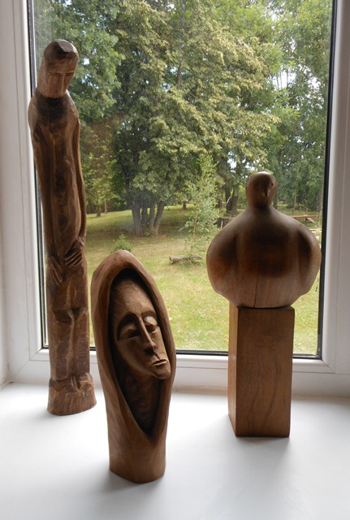
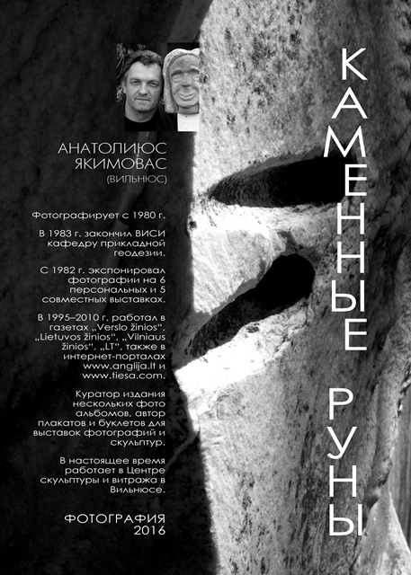
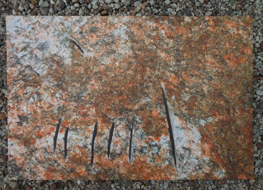
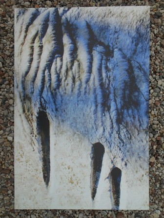
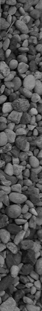
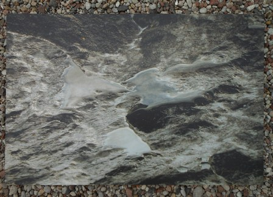

Выставка
"Каменные руны и
шепот дерева"

Деревянная скульптура Юозаса Шикшнялиса


Фотография Анатолиюса Якимоваса
2 июля 2016 г. в Виштынецком эколого-историческом музее открылась выставка литовских художников
Выставка объединила работы двух художников. Многообразие фактуры камня на фотографиях Анатолиюса Якимоваса (Вильнюс) в сочетании с деревянными скульптурами Юозаса Шикшнялиса (Клайпеда) представляют творческий опыт художников общения с природой, их талант видеть в самом обычном камне, стволе дерева некий образ, гармонию цвета, форм и линий.
Музей сердечно благодарит организатора выставки консула Литвы Брониуса Макаускаса (город Советск).
Музей сердечно благодарит организатора выставки консула Литвы Брониуса Макаускаса (город Советск).

Фотография Анатолиюса Якимоваса
Выставка продолжит работу до 2 августа 2016 года.

ШЕПОТ ДЕРЕВА
ЮОЗАС ШИКШНЯЛИС (КЛАЙПЕДА)
"Мой учитель - Природа, вырастившая деревья, породившая камни. Долго смотрю на них, пытаясь отгадать, какую форму Природа там спрятала, отгадавши, соскрёбываю все лишнее, и остаются вещи, которых неохота называть скульптурами, оставляя это название людям, которые окончили специальные науки, имеющие дипломы или ремесло. Кто-то говорил творчество - это бегство от темноты в своей душе, добавляю творчество - это попытка очистится от
пыли повседневности, попытка искать (не обязательно найти) суть в безумном бегстве в небытие. Радость творчества не в оконченной работе, но в творческом процессе понемногу луща форму. Это послушно от ударов резцом раскалывающийся камень и стружки дуба или липы, и от усилий гудящие мышцы.
Творчество труд Сизифа толкаешь вверх по склону камень, заранее зная, что он свалиться вниз"
пыли повседневности, попытка искать (не обязательно найти) суть в безумном бегстве в небытие. Радость творчества не в оконченной работе, но в творческом процессе понемногу луща форму. Это послушно от ударов резцом раскалывающийся камень и стружки дуба или липы, и от усилий гудящие мышцы.
Творчество труд Сизифа толкаешь вверх по склону камень, заранее зная, что он свалиться вниз"
Шикшнялис Юозас (псевд. Райдас Дубре), прозаик, драматург. скульптор
Родился 1.03.1950 в Швянтдубре (Варенский р-н).
В 1973 г. окончил отделение библиотечного дела и библиографии Вильнюсского университета. Работает директором Клайпедской публичной библиотеки им. Евы Симонайтие.
С 1994 г. – член СПЛ.
Родился 1.03.1950 в Швянтдубре (Варенский р-н).
В 1973 г. окончил отделение библиотечного дела и библиографии Вильнюсского университета. Работает директором Клайпедской публичной библиотеки им. Евы Симонайтие.
С 1994 г. – член СПЛ.
Адрес музея:
Калининградская область, Нестеровский район,
пос. Краснолесье,
ул. Школьная, 5-а.
Время работы:
со вторника по воскресенье
с 10:00 до 18:00
Калининградская область, Нестеровский район,
пос. Краснолесье,
ул. Школьная, 5-а.
Время работы:
со вторника по воскресенье
с 10:00 до 18:00

Фотография Анатолиюса Якимоваса
30 июня 2016 г.